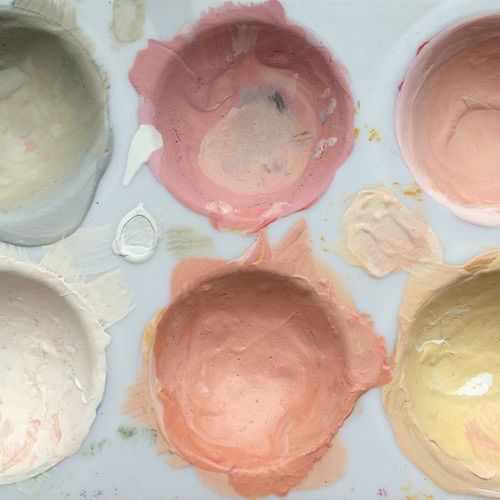
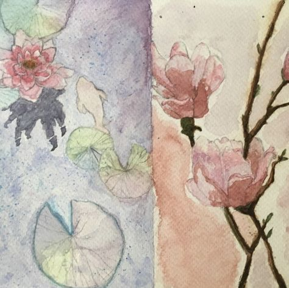
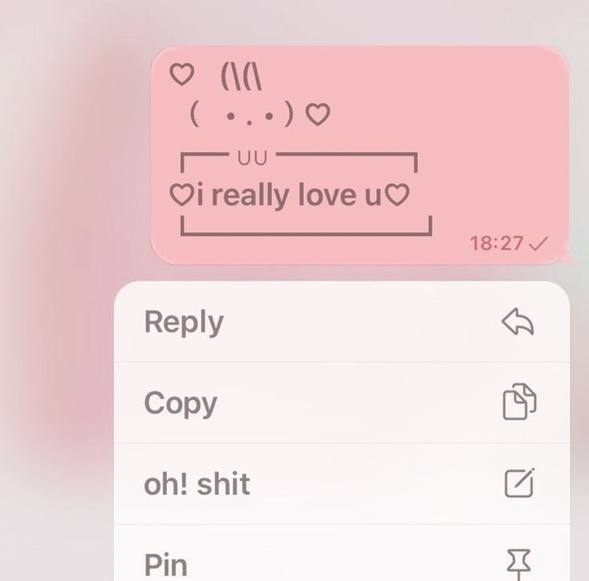

take 5 minutes out of your day to sit in silence! if you have any thoughts, let them pass by, like clouds.
since the full moon just happened, search up 'chandra namaskar' and practice it! it's easy!!!
sit down and write whatever's on your mind. it can be song lyrics, emotions, ANYTHING!!!
do a small act of kindness!! it'll make you feel a lot more loving and loved!!
end your day with a few minutes of reflection. think about your successes, the moments that made you smile, and the things you’re grateful for!


